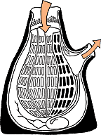
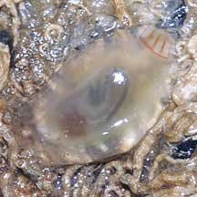
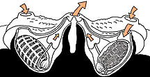

|
|
| ascidians text index | photo index |
| Phylum Chordata > Subphylum Tunicata/Urochordata |
| Ascidians Class Ascidiacea updated Nov 2019
Where seen? These odd blobs are often encountered on many of our shores. They are usually found on hard surfaces such as rocks, jetty pilings and coral rubble. They also grow on seagrasses and other vegetation in the seagrass lagoon. What are ascidians? Ascidians are actually closely related to vertebrates like us. We belong to same Phylum Chordata as they do! There are about 3,000 known species of ascidians. These range from tiny ones 1mm long, to those more than 10cm. Most are found in shallow waters but some species are found in very deep waters. There are no freshwater species and most cannot tolerate a salinity lower than 20%. Features: An ascidian is a complex animal. It usually has a circulatory system, a digestive system, a heart and other organs. It generates a one-way current through its body. A part of the gut is modified to filter out plankton from this water flow. On average, an ascidian can filter 1 body volume of water per second. A tiny specimen only a few centimeters long may pump a hundred litres of water in a span of 24 hours. Thick skinned: The entire animal is encased in a little bag. 'Askidion' comes from the Greek word for 'bladder' or 'little bag'. Some ascidians have a sturdy outer coat called the tunic. Thus, they are sometimes called tunicates. The tunic supports and protects them. As the animal grows bigger, the tunic also grows with it. Unlike other creatures with a tough outer coat, tunicates don't have to moult to get bigger! The tunic is made of protein and a substance called tunicin that closely resembles cellulose (the substance that plant walls are made of). Squirty surprise: Some solitary ascidians have bands of muscles along their body. When these muscles contract, water squirts out of the animal. So they are sometimes also called sea squirts. They may do this to get rid of something in them, or when they are disturbed. |
 Solitary sea squirt growing on hard surfaces. Tuas, May 05 |
 Cross-section of a solitary ascidian |
 Solitary sea squirt growing under stones. Changi, Jul 10 |
| Colonial ascidians: Some ascidians
form as solitary animals, sometimes called simple ascidians. Other
ascidians may form colonies with many individual animals called zooids.
They are called colonial or compound ascidians. In some colonies,
the zooids are quite independent of one another. In others, they are
highly connected to one another. They may be connected by stem-like
structures called stolons, or embedded in a common tissue so the entire
colony looks like a slimy layer. In well integrated colonies, the
zooids may be arranged in regular patterns such as a ring or star-like
shape. In colonial ascidians, the zooids are usually tiny, sometimes
microscopic. The colony can range from a few centimeters in diameter
to a meter or more, and up to several centimeters thick. Colonial
ascidians may grow as slimy layers and blobs on rocks, jetty pilings
and other hard surfaces. Some tropical members of the family Didemnidae contain green symbiotic algae in their tunics and inside the bodies of the zooids. These may also contain symbiotic cyanobacteria. It is believed that the symbionts share the products of photosynthesis with the host ascidian. At least one species of Didemnum can slowly move over the surface, perhaps to maximise the sunlight for the symbionts. |
 Colonial ascidians on seagrasses. Pulau Semakau, Mar 05 |
 Colonial ascidian Arrows show the flow of water through the animals. |
 Colonial ascidians forming a sheet over hard surfaces. East Coast, Jun 09 |
| Sometimes confused with sponges.
More on how to tell apart blob-like
animals. However, while sponges are simple
animals without specialised organs, ascidians are more complex animals.
While ascidians tend to be smooth and slimy, sponges tend to be rough
and are usually not slimy. Ascidian babies: Almost all ascidians are hermaphrodites, having both male and female organs. Most avoid self-fertilisation by developing either eggs or sperm at any one time. Most solitary ascidians release their eggs and sperm into the water for external fertilisation. Colonial ascidians usually retain and brood their eggs. Colonial ascidians can also multiply by budding off. Ascidian babies are like us! Ascidians are actually closely related to vertebrates like us! Their free-swimming larvae look like and are called tadpoles. These have a stiff notochord (a primitive spinal cord). The subphylum they belong to 'Urochordata' means 'tail string'. Some also have an eye spot. The free-swimming stage can last for 36 hours or as little as a few minutes! The tadpoles do not feed. When the larva decides to settle down, the tail, notocord and eyespot are absorbed as the larva sticks itself, usually headfirst, onto a hard surface. The larvae then undergos metamorphosis and matures into the adult form. Role in the habitat: Ascidians are probably not very tasty. As their bright colours suggest, some ascidians may contain substances that are distasteful to deter predators. They may also produce substances to repel other organisms that try to grow near or on them. This repulsive character is exploited by other small animals. Tiny creatures may live inside or on large ascidians. Some sponge crabs make their living disguises out of ascidians instead of sponges. But nevertheless, ascidians still do get eaten by some creatures such as flatworms and nudibranchs and Lamellaria snails. |
 Sponge crab using an ascidian disguise. Chek Jawa, Aug 05 |
 A flatworm eating an ascidian? Changi, Jun 08 |
| Human uses: As ascidians are closely
related to vertebrates, studying them helps us better understand the
ancestry of vertebrates and our own biology. Large ascidians are eaten
in places such as Chile, Europe and Japan, or used as bait. Status and threats: Our ascidians are not listed among the threatened animals of Singapore. However, like other creatures of the intertidal zone, they are affected by human activities such as reclamation and pollution. Trampling by careless visitors may also have an impact on local populations. |
| Class
Ascidiacea on Singapore shores text index and photo index of ascidians seen on Singapore shores |
| Unidentified ascidians on Singapore shores |
On wildsingapore
flickr
|
Links
References
|